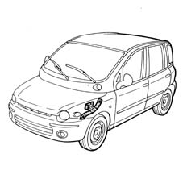
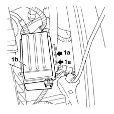
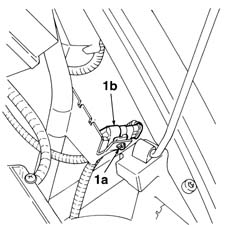
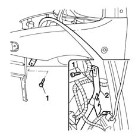
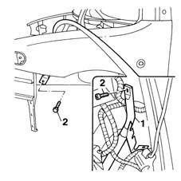

7210A55 R.R. PILLAR PANEL BRACKET/REINFORCEMENT
- Path
- Procedures > 72 PANELS AND FRAME > 7210 REMOVING REFITTING > 7210A STRUCTURAL ELEMENTS (FRONT PART) > 7210A55 R.R. PILLAR PANEL BRACKET/REINFORCEMENT
- Kind
- repair procedure (removal / refitting; the operation number is the code)
- Applies to
- all engines; all production periods
- Interactive page
- https://sloeber94.github.io/elrnDB-fMltpl/en/#/2892307
Applies to: all engines; all production periods
 Removing
Removing
 Refitting
RefittingOpen the bonnet.
Check if any of the connected parts are deformed by checking body alignment dimensions. Use appropriate measurement tools (reference rigs, templates or gauges).

Applies to: all engines; all production periods
1. Disengage the retaining lugs (1a) and release the secondary junction unit (1b) from the side piece connecting bracket.

Applies to: all engines; all production periods
1. Using the expansion button (1a), remove the connector (1b) and set it aside.

Applies to: all engines; all production periods
1. Undo the bolts shown in the figure.
2. Remove the front side piece/pillar reinforcement bracket.

Applies to: all engines; all production periods
Refitting
Removing1. Fit the bracket on the car.
2. Tighten the bolts shown in the figure.
Refit the connector and secondary junction unit.

Applies to: all engines; all production periods
Refit fouling parts.